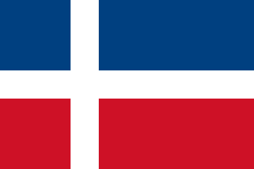
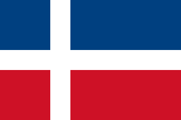

Welcome to Miganda
Miganda is a new country invented by Antonio Lucic and Josip Palavra.
Miganda is situated in Knin,Croatia. Miganda's current
population is 0 but soon it will rise to be number one.

Miganda has the most
beautiful beaches and is the third richest country in the world.
The main resource of the country is oil and Tourism.Miganda also has a King and his name is King Nosonja the Third.
The Flag

The National Flag of Miganda is ranked the second most beautiful Flag in Europe.
The White cross stands for
Nosonja(the country's King).The Red stands for the blood of the people,that was
given for independence, and the Blue stands for Miganda's beautiful Beaches.
The Flag
